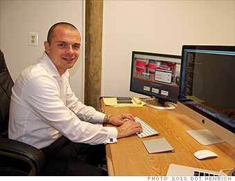

Scenario
Allen was working on a project with some other developers, Jason and Daniel, as well as their project manager, Tim. Tim decided to use GitHub to manage the project. After discussing with the developers, Tim broke the workload into three issues and assigned one to each programmer. Each programmer had their own branch that they edited locally (on their own computers) and pushed their codes back onto Github so that the other team members could view their progress.
After Allen and Jason finished their parts, Allen began to merge the two branches, that is, to integrate Jason's and his codes into one. However, many conflicts emerged when he tried to merge the two branches. Fortunately, the system highlighted where (which documents and which lines) the conflicts were so that Jason could pinpoint and fix all the conflicts. One of these conflicts arose because Jason and Allen edited the same line of code and the system asked Allen to choose one of them to execute.
Removing all the conflicts, Allen then pushed the merged document back onto GitHub. Daniel then integrated his part into the merged document.
Before moving on the next stage of development, Tim decided that the team should have a thorough and detailed discussion about the task assignment so that the team would not have overlapping work and therefore fewer conflicts would arise.
Allen, Developer

Jason, Developer
Daniel, Developer

Tim, Project Manager